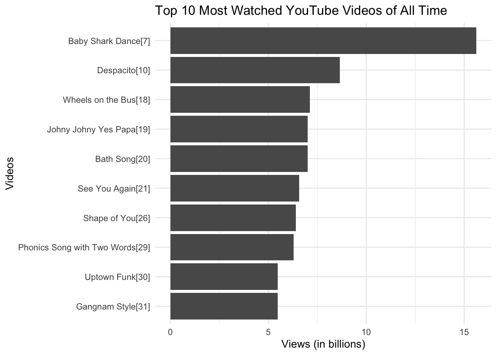
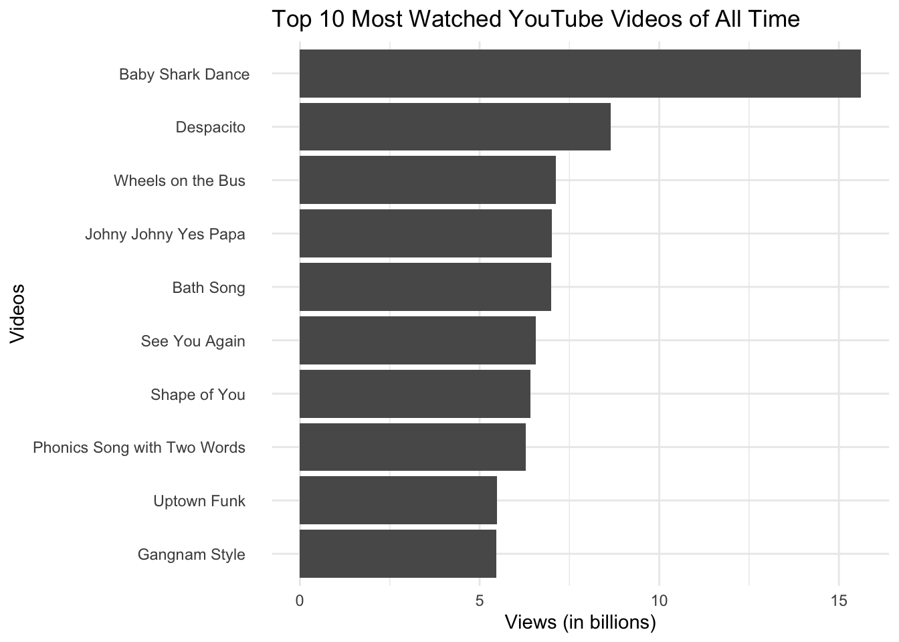

#LOAD PACKAGES
library(tidyverse)Webscraping Tables

Data doesn’t just magically appear on your computer you need to get it from somewhere.
Often times, we download data (.csv files or other) and save it locally on our computer.
Other times, we download it from R packages (like we did with the gapminder dataset).
Obtaining Data From The Web
For example, maybe we are interested in renting an apartment or house in Vermont (or studying the rental market in Vermont). You might navigate to Craigslist to get some information: https://vermont.craigslist.org/search/apa
We could spend many hours writing down and creating a spreadsheet with the information about each available apartment… or…
When you enter a URL into your browser, your browser connects to the web server at that URL and asks for the source code for that website. We can view the source code in a web brower by clicking on view source.
Web scraping is a process by which we can use R (or other software) to systematically go through the source code to extract content and data.
STOP: Should we be scraping this data?
Before scraping data from the web, you should always check whether or not you should scrape it.
Is it legal? Can your specific use case violate the rules? Even if legal, is it ethical?
In the US, publicly available information on the web is legal as long as the scraped data is not:
- used for any harmful purpose
- used to directly harm the scraped website’s business of operations
- including personally identifiable information (PII)
There are some very interesting cases which help to define the above precedent that you might want to read about: eBay vs. Bidder’s Edge (2000), Facebook vs. Power Venures (2009) and Linkedin vs. hiQ Labs (2019)
Websites sometimes outline the use of webscraping in their Terms of Use. There are two places you can look: the robots.txt file and the Terms of Service Document. For example, in the the Craigslist terms of service document, we find the following text “You agree not to copy/collect CL content via robots, spiders, scripts, scrapers, crawlers, or any automated or manual equivalent (e.g. by hand). Wikipedia on the other hand, doesn’t explicit state that web scraping is disallowed so I will encourage us to use that website for many of our examples this week.
First, a bit about html code and html tables
Basics of HTML
- HTML stands for Hyper Text Markup Language and is the standard markup language for creating webpages
- HTML code consists of a series of elements
Tip
Typically, an HTML element is defined by a start tag, some content, and an end tag
<tagname> ...some content here... </tagname>
For example:
<html>
<head>
<title>Page Title</title>
</head>
<body>
<h1>My First Heading</h1>
<p>My first paragraph.</p>
</body>
</html>There are many, many different possible tag elements. In this class, it’s not important that you know the specifics of what each element is. It’s useful for you to understand the basic structure.
HTML Tables
An HTML table is used to represent data in a structured way
<table>Defines a table<th>Defines a header cell in a table<tr>Defines a row in a table<td>Defines a cell in a table
Here is the HTML code:
<table>
<tr>
<th>Name</th>
<th>Birth Year</th>
<th>Country</th>
</tr>
<tr>
<td>Harry Styles</td>
<td>Feb 1, 1994</td>
<td>Britain</td>
</tr>
<tr>
<td>Taylor Swift</td>
<td>Dec 13, 1989</td>
<td>USA</td>
</tr>
<tr>
<td>Justin Bieber</td>
<td>Mar 1, 1994</td>
<td>Canada</td>
</tr>
</table>Here is how the HTML displays in a web browser:
| Name | Birth Year | Country |
|---|---|---|
| Harry Styles | Feb 1, 1994 | Britain |
| Taylor Swift | Dec 13, 1989 | USA |
| Justin Bieber | Mar 1, 1994 | Canada |
Today’s class will focus on scraping data from HTML tables!
HTML class
The class attribute can be added to any HTML element. Often it is used to help customize the styling of the element (among other things).
<h2 class="city">Middlebury</h2>
<p class="city">Middlebury is a town in Vermont</p>This can be particularly useful in web scraping – we can ask to scrape particular elements, particular classes, or both!
Web Scraping using rvest
We need the package rvest to help us with this.
library(rvest)Viewing Raw HTML from a website
You can inspect the source code of any webpage by using a web browser like Firefox or Chrome.
- On Firefox, navigate to the “Tools” menu item in the top menu and click on “Web Developer/Page Source”. You can also use the shortcut
Command + U - On Chrome, navigate to the top menu item “View” and click on “Developer/View Source.” You can also use the keyboard shortcut
Option-Command-U. It also can be useful to use the SelectorGadget Extension.
Webscraping Tables from Wikipedia
Check out the information on the (List of the Most Viewed YouTube Videos on Wikipedia)[https://en.wikipedia.org/wiki/List_of_most-viewed_YouTube_videos]. Suppose we want to scrape this data to use in R.
read_htmlscrapes the raw html from the webpage as texthtml_element(andhtml_elements) selects particular elements from the HTML codehtml_tableformats a scraped html table as a tibble (R table)
youtube_videos <- read_html("https://en.wikipedia.org/wiki/List_of_most-viewed_YouTube_videos") %>%
html_element(".wikitable") %>%
html_table()
youtube_videos# A tibble: 31 × 6
`Video name` Uploader `Views (billions)` Date Notes ``
<chr> <chr> <chr> <chr> <chr> <chr>
1 Baby Shark Dance[7] Pinkfon… 15.62 June… "[A]" <NA>
2 Despacito[10] Luis Fo… 8.65 Janu… "[B]" <NA>
3 Wheels on the Bus[18] Cocomel… 7.13 May … "" <NA>
4 Johny Johny Yes Papa[19] LooLoo … 7.01 Octo… "" <NA>
5 Bath Song[20] Cocomel… 7.00 May … "" <NA>
6 See You Again[21] Wiz Kha… 6.57 Apri… "[C]" <NA>
7 Shape of You[26] Ed Shee… 6.41 Janu… "[D]" <NA>
8 Phonics Song with Two Words[29] ChuChu … 6.29 Marc… "" <NA>
9 Uptown Funk[30] Mark Ro… 5.48 Nove… "" <NA>
10 Gangnam Style[31] Psy 5.47 July… "[E]" <NA>
# ℹ 21 more rowsWe could have used
html_element("table")If we did this, it would have pulled the first<table>from the page.We could have used
html_elements("table")If we did this, it would have pulled all the<table>elements from the page.If you want a specific table that isn’t the first table, scrape all the tables and apply
html_table(). Then take that new object of the tables and add[[n]]to get the \(n^{th}\) table. For example to call the \(2^{nd}\) table,
tables <- html %>%
html_elements("table") %>%
html_table()
tables[[2]]- In this case, we used
html_elements(".wikitable")I choose to use this because the<table>was also defined with a uniqueclass:<table class="wikitable sortable">
Warning
Note that if we are using html_element to call a class, it is important to add a “.” before the class element name. You do not need to do this is you are calling an HTML element (like “table”)
Cleaning up with janitor
Web scraping doesn’t always format perfectly. Let’s clean it up!
library(janitor)
Clean up the names of the header:
youtube_videos <- clean_names(youtube_videos)Remove the last row:
# youtube_videos <- youtube_videos %>%
# filter(no != "As of August 8, 2023")Format the views as a number using as.numeric:
youtube_videos <- youtube_videos %>%
mutate(views_billions = as.numeric(views_billions))What are the top 10 most viewed YouTube Videos?
top10 <- youtube_videos %>%
arrange(desc(views_billions)) %>%
slice(1:10)
top10# A tibble: 10 × 6
video_name uploader views_billions date notes x
<chr> <chr> <dbl> <chr> <chr> <chr>
1 Baby Shark Dance[7] Pinkfong Ba… 15.6 June… "[A]" <NA>
2 Despacito[10] Luis Fonsi 8.65 Janu… "[B]" <NA>
3 Wheels on the Bus[18] Cocomelon -… 7.13 May … "" <NA>
4 Johny Johny Yes Papa[19] LooLoo Kids… 7.01 Octo… "" <NA>
5 Bath Song[20] Cocomelon -… 7 May … "" <NA>
6 See You Again[21] Wiz Khalifa 6.57 Apri… "[C]" <NA>
7 Shape of You[26] Ed Sheeran 6.41 Janu… "[D]" <NA>
8 Phonics Song with Two Words[29] ChuChu TV N… 6.29 Marc… "" <NA>
9 Uptown Funk[30] Mark Ronson 5.48 Nove… "" <NA>
10 Gangnam Style[31] Psy 5.47 July… "[E]" <NA> Once we have this data, we can make cool plots!
top10 %>%
ggplot( aes(x=views_billions, y=reorder(video_name, views_billions))) +
geom_bar(stat="identity") +
xlab("Views (in billions)") +
ylab("Videos") +
ggtitle("Top 10 Most Watched YouTube Videos of All Time") +
theme_minimal()
:::callout-tip In this case, the list of the names is still not displaying very neatly. For example, rather than "Baby Shark Dance"[6] I might want it to just say Baby Shark Dance.
We can use the stringr package to remove symbols and numbers from the video names. We will be talking more about stringr later this semester and it’s not something I expect you to be able to do at this point in the semester.
library(stringr)
top10 %>%
mutate(video_name=str_replace_all(video_name, "[^[:alpha:]]", " ")) %>%
ggplot(aes(x=views_billions, y=reorder(video_name, views_billions))) +
geom_bar(stat="identity") +
xlab("Views (in billions)") +
ylab("Videos") +
ggtitle("Top 10 Most Watched YouTube Videos of All Time") +
theme_minimal()
EMW - Webscraping Tables EMW - Webscraping Tables EMW - Webscraping Tables EMW